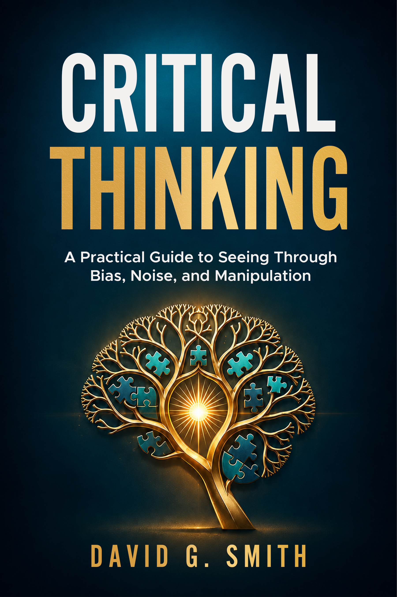

Critical Thinking: A Practical Guide
A comprehensive 468-page manual mapping over 100 logical heuristics, cognitive biases, and practical frameworks.
Explore Book →Data scientist, solutions architect, author, and strategic advisor specializing in federal technology modernization, cloud architecture, geospatial intelligence, and critical thinking.
About David
I am an engineer, technical architect, data scientist, and author based in Washington, D.C. With extensive experience in the private sector and as a federal IT professional, I specialize in navigating the complex intersection of enterprise data, cloud architecture, and geospatial technology.
While my technical expertise spans AI and machine learning, cloud architecture, data science and data engineering, geospatial and other technologies, my core focus is always on the human element: helping leaders and organizations improve strategic direction and understand complex information. Whether I'm designing a data mesh for environmental quality tracking or writing about cognitive biases, the unifying theme of my work is equipping people with the tools to make better, more rational decisions.
I am passionate about translating technical possibilities into practical realities, and I bring a disciplined, critical-thinking approach to both technology modernization and everyday problem-solving.
Selected Work
Led the architectural migration of the USGS Water Quality Portal data mesh into the US EPA Data Management and Analytics Platform (DMAP). This modernization effort securely federated massive environmental datasets for improved accessibility and scalable cloud performance.
View Portal →Architected the rebuild of the EPA's Envirofacts system as a cloud-native application within the DMAP environment. Replaced legacy monolithic structures with resilient, AWS-backed data pipelines to ensure reliable public access to critical environmental records.
View Envirofacts →Provided geospatial data integration and systems engineering for the EPA MyEnvironment mapping platform, enabling users to effortlessly visualize cross-media environmental data in their immediate geographic location.
View MyEnvironment →Supported advanced spatial analysis capabilities for NEPAssist, an application facilitating the environmental review process. The tool leverages complex GIS web services to support critical infrastructure and regulatory decision-making.
View NEPAssist →Featured & Recent

A comprehensive 468-page manual mapping over 100 logical heuristics, cognitive biases, and practical frameworks.
Explore Book →Matt Forrest shared a story that struck a chord with me. He talked about winning an atlas in a third grade contest and not realizing that it could become a career. He didn't know geography was even a department until an advisor pointed him toward it. That moment changed the direction of his life. It's a familiar story for many of us who work in...
Read More →The recent conversation around America.gov highlights something that has been building for years. Something I've been trying to raise awareness of for years. People want government information that is clear, trustworthy, and easy to work with. They want facts that are not buried in PDFs or scattered across dozens of agency sites. They want tools...
Read More →A fascinating debate recently broke out on LinkedIn that cuts right to the heart of how we evaluate technological progress versus corporate storytelling. Anthropic published a high profile announcement claiming that its Claude models had autonomously discovered a completely new, CRISPR like enzyme system hidden inside bacteriophage DNA. According...
Read More →Advisory
My work spans data science, cloud architecture, geospatial systems, data governance, and technology modernization. I particularly enjoy problems where the technical solution has to work within complex organizational, regulatory, and operational constraints.
Modernizing legacy data environments, navigating compliance, and architecting secure, resilient cloud solutions (AWS) for massive datasets.
Building data pipelines, mesh architectures, and geospatial intelligence systems that make information easier to find, understand, and use.
Translating technical possibilities into practical, executive-level decisions. Advisory guidance on data strategy, engineering leadership, and innovation.
Collaborating on topics related to critical thinking, information literacy, and the practical impacts of artificial intelligence on small business.
Available for selected advisory engagements.
Let's Talk
Interested in discussing advisory board roles, technology strategy discussions, speaking engagements, or my writing? Reach out directly via email or connect with me on LinkedIn.